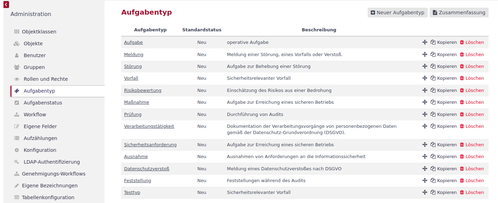
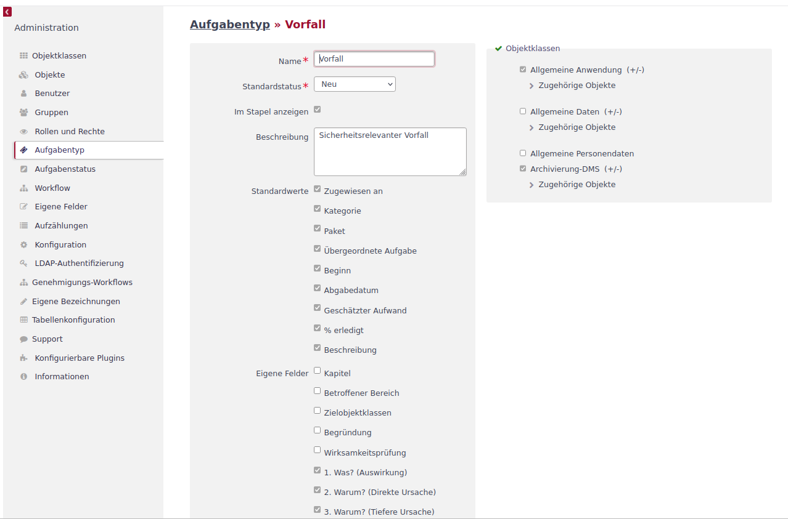
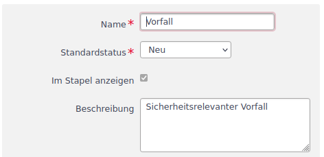
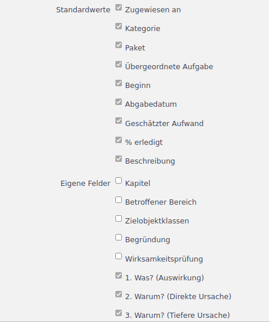
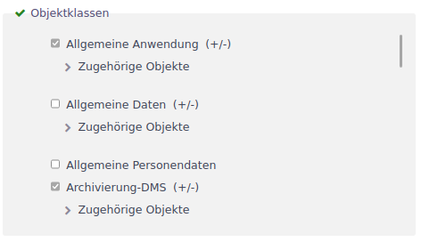
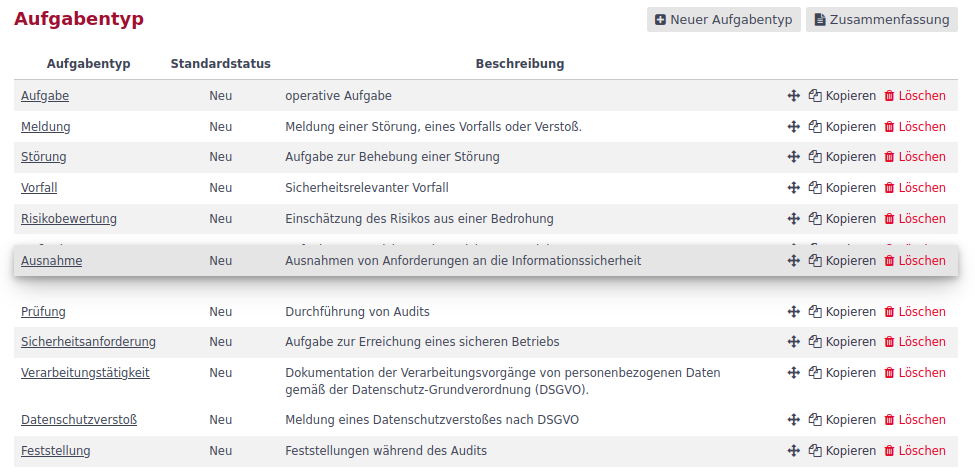
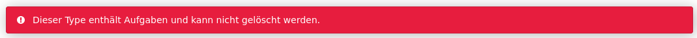
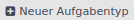
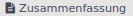
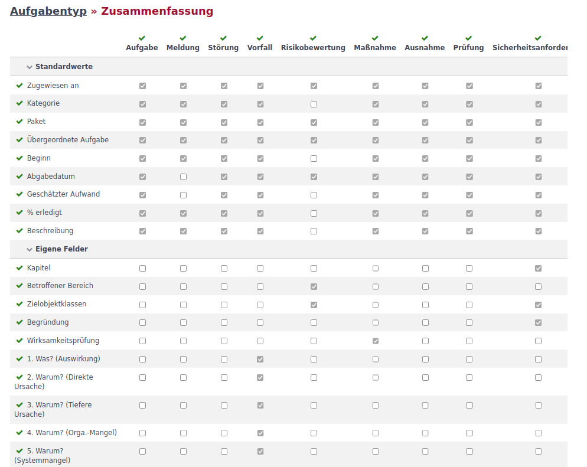

Aufgabentyp
Aufgabentypen repräsentieren die verschiedenen Tätigkeiten, die im Rahmen des ISMS-Betriebs durchzuführen und zu dokumentieren sind. Beispiele sind z.B. Maßnahmen, Risikobewertungen oder Vorfälle.
Ein Aufgabentyp ermöglicht es
-
nach bestimmten Aufgaben zu suchen, zu filtern oder sie zu gruppiern,
-
die Attribute zu bestimmen (Standardfelder oder eigene Felder) die bearbeitet werden,
-
die Nutzbarkeit auf ausgewählte Objektklassen zu begrenzen,
-
einen spezifischen Workflow abzubilden.
Aufgabentypen können von einem Administrator ergänzt, bearbeitet und gelöscht werden.
Aufgabentypliste
Ein Klick auf Aufgabentyp im Administrationsbereich führt zur Aufgabentypliste. In dieser Liste werden alle vorhandenen Aufgabentypen mit ihrem Standardstatus und der Beschreibung angezeigt.

In der oberen rechten Ecke befinden sich Schaltflächen, um einen neuen Aufgabentyp zu erstellen oder die Zusammenfassung einzublenden.
Aufgabentyp bearbeiten
Um einen Aufgabentyp zu bearbeiten, klickt man in der Liste auf den Namen des zu bearbeitenden Aufgabentyps.

In dieser Maske werden allgemeine Daten, eingeblendete Felder und die Objektklassenauswahl festgelegt.
- Allgemeine Daten
-
Allgemeine Daten werden im oberen linken Bereich definiert.

In diesem Bereich werden folgende Attribute abgefragt:
-
Name: Die Bezeichnung für den Aufgabentyp,
-
Standardstatus: Status, der beim Erstellen einer Aufgabe von diesem Typ gesetzt wird,
-
im Stapel anzeigen: Option, ob dieser Aufgabentyp standardmäßig im Paketstapel automatisch angezeigt werden soll,
-
Beschreibung: Beschreibung des Aufgabentyps zur leichteren Zuordnung im Betrieb.
Die Beschreibung ist für den Anwender beim Bearbeiten einer Aufgabe sichtbar.
Der Name und der Standardstatus sind dabei Pflichtfelder. Bei der Änderung des Namens bleiben die Verknüpfungen zu den Aufgaben erhalten.
Mit Klick auf den Button werden die Änderungen übernommen.
werden die Änderungen übernommen. -
- Eingeblendete Felder
-
Unterhalb der allgemeinen Daten können die Formularfelder ausgewählt werden, die für diesen Aufgabentyp benötigt werden.

Zum einen können Standardfelder, die optional sind, ein- und ausgeblendet werden. Zum anderen können diesem Aufgabentyp eigene Felder zugeordnet werden.
Mit Klick auf den Button
werden die Änderungen übernommen. - Objektklassenauswahl
-
Die Objektklassenauswahl ermöglicht es, den Aufgabentyp nur bei bestimmten Objektklassen anzuzeigen.

Durch Klick auf den grünen Haken neben der Blocküberschrift lassen sich alle Objektklassen aus- und abwählen. Durch Klick auf die Auswahlfelder neben den Objektklassen lässt sich die Auswahl anpassen. Sind einer Objektklasse Objekte zugeordnet werden sie unter Zugehörige Objekte gelistet. Dort besteht die Möglichkeit die Auswahl auf einzelne Objekte einzuschränken.
Mit Klick auf den Button werden die Änderungen übernommen.
Reihenfolge bearbeiten
Die Reihenfolge, in der die Aufgabentypen in der Liste und anderen Auswahlfeldern dargestellt werden, kann durch den Administrator angepasst werden.

Durch Klick und Halten der linken Maustaste auf das Icon  kann die Zeile mit dem Aufgabentyp in der Liste verschoben werden. An der Position, an der die linke Maustaste gelöst wird, wird der Aufgabentyp platziert.
kann die Zeile mit dem Aufgabentyp in der Liste verschoben werden. An der Position, an der die linke Maustaste gelöst wird, wird der Aufgabentyp platziert.
Aufgabentyp kopieren
Soll ein Aufgabentyp als Vorlage für einen neuen Aufgabentyp dienen, kann aus der Aufgabentypliste mit dem Button  in der entsprechenden Zeile die Parametrierung in einen neuen Aufgabentyp übernommen werden. In der sich öffnenden Bearbeitungsmaske sind Einstellungen aus der Vorlage übernommen.
in der entsprechenden Zeile die Parametrierung in einen neuen Aufgabentyp übernommen werden. In der sich öffnenden Bearbeitungsmaske sind Einstellungen aus der Vorlage übernommen.
In der Maske muss der Name des neuen Aufgabentyps eingetragen werden. Alle Einträge können bearbeitet werden. Mit dem Klick auf den Button  wird der neue Aufgabentyp erstellt.
wird der neue Aufgabentyp erstellt.
Aufgabentyp löschen
Wird ein Aufgabentyp nicht genutzt, kann dieser über den Button  in der Zeile des entsprechenden Aufgabentyps entfernt werden. Das Löschen muss noch einmal in einem Popup-Fenster bestätigt werden.
in der Zeile des entsprechenden Aufgabentyps entfernt werden. Das Löschen muss noch einmal in einem Popup-Fenster bestätigt werden.
Falls der Aufgabentyp in Verwendung ist, wird der Löschvorgang mit folgender Meldung abgebrochen:

| Über die Aufgabenliste kann über die Filterfunktion nach Aufgaben eines bestimmten Typs gesucht werden. Über die Mehrfachauswahl können diese Aufgaben gelöscht oder einem anderen Aufgabentyp zugeordnet werden. Danach sollte der zuvor geblockte Löschvorgang erfolgreich sein. |
Neuer Aufgabentyp
Über den Button  rechts oberhalb der Aufgabentypliste wird die Maske zur Erstellung eines neuen Aufgabentyps angezeigt.
Die Inhalte entsprechen den Punkten in Aufgabentyp bearbeiten. Pflichtfelder sind der Name und der Standardstatus. Mit Klick auf den Button wird der neue Aufgabentyp erstellt.
Zusammenfassung
Die Zusammenfassung zeigt in einer Kreuztabelle, welche Standardwerte und Eigene Felder bei welchem Aufgabtyp dargestellt werden. Aufgerufen wird die Zusammenfassung über den Button .

Die Zuordnung kann auch direkt in der Tabelle angepasst werden. Die Anpassungen werden mit dem Klick auf den Button übernommen.